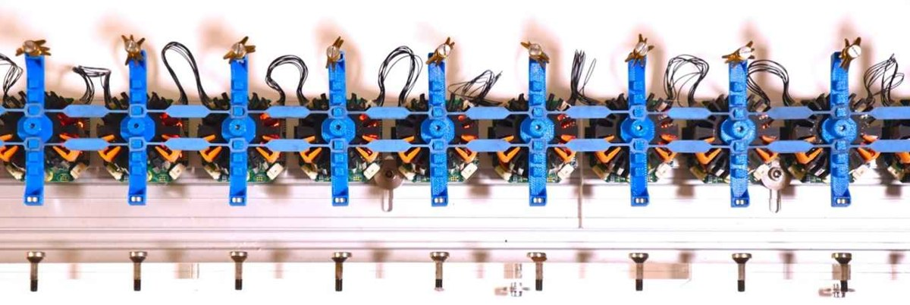
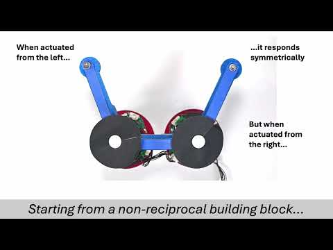

Collective motion & time crystals
Accepted in Nature
How does a material find a common rhythm? In active mechanical lattices, vibrations grow in wavelength and period until a synchronized state emerges.
I am a physicist interested in how simple interactions give rise to complex motion. My research brings together active matter, soft matter and robotics to understand and build materials with lifelike functions.
I am an NWO Rubicon postdoctoral researcher at the École Normale Supérieure de Lyon, working with Denis Bartolo on active colloidal solids. Previously, I completed my PhD with Corentin Coulais at the University of Amsterdam, where I developed robotic metamaterials with nonreciprocal interactions.
Research · Google Scholar · jonas.veenstra[AT]ens-lyon.fr
Accepted in Nature
How does a material find a common rhythm? In active mechanical lattices, vibrations grow in wavelength and period until a synchronized state emerges.

Physical Review X 16, 021012 · 2026
Adding activity can make an active solid less active. We study how the connections between its building blocks control this collective mechanical response.

Nature Physics 22, 784–790 · 2026
Motorized chains learn to change shape by adjusting their local stiffnesses. Training lets them remember responses and use them for gripping and locomotion.

PNAS 123, e2531723123 · 2026
Buckling can give an active filament useful mechanical functions. We explore how asymmetric interactions turn an instability into bending and motion.

Physical Review X 15, 031045 · 2025
A localized wave can oscillate as it travels. Nonreciprocal interactions sustain these breathing waves in chains of motorized oscillators, despite energy loss.

Nature 639, 935–941 · 2025
Active elastic solids roll, crawl and adapt to uneven terrain. Their motion emerges from local mechanical interactions, without a central controller.

Nature 627, 528–533 · 2024
Asymmetric interactions drive solitons and antisolitons in the same direction. A chain of motorized rods carries repeated waves without needing to be reset.
IEEE International Conference on Mechatronics · 2023
We explore control architectures for metamaterials designed to control mechanical vibrations.
A short introduction to our work on active solids that move and adapt.
